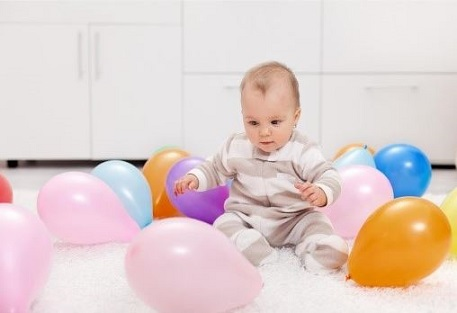

El juego es una actividad física natural e innata en todas las regiones y culturas del mundo, pero también es una estrategia que permite fortalecer el desarrollo psicomotriz, es una actividad recreativa que proporciona entretenimiento y diversión, aunque también puede cumplir un papel educativo; es una acción positiva que contribuye a la adquisición de destrezas o habilidades, permite establecer relaciones sociales, y es una herramienta que puede ser utilizada para la evaluación y seguimiento de los niños y las niñas, a nivel físico (crecimiento, gatear, caminar, correr, entre otras); a nivel psicológico ya que permite evaluar la capacidad de socializar e interactuar con pares, a nivel moral ya que comprende el papel de las reglas; en el intelecto ya que mediante el juego se desarrollan habilidades como la imaginación y la capacidad creadora.
Es así como los niños deben adquirir habilidades que les permitan el reconocimiento y control de su propio cuerpo. El desarrollo de las habilidades psicomotrices en los niños de cuatro años está relacionada estrechamente con la vida afectiva, social y comunicativa, como resultado de una educación que encauza al ser humano a desarrollar todas sus potencialidades.

Bolos

Se colocan botellas de plástico pintadas de diferentes colores cada una de estas tiene escrito una consonante o número, seguidamente los niños pasan uno a uno a derribar los bolos que se le indique utilizando una pelota dentro de una media velada.
Ejemplo: Al niño que pasa se le indica que derribe el bolo de color azul con el número 10. Y de esta manera iremos practicando colores y números.
Memoria

Se muestra tapas de plástico recicladas las cuales contiene en su interior imágenes como el sol, hamburguesa, una carita feliz una luna entre otras. Luego se esconden las tapas de modo que no se vean las figuras, luego por equipos irán revelando las tapas, el equipo que primero encuentre las parejas gana.
Lotería Numérica

Mostramos a los niños cartones con varios números y una botella llena de pompones con los números del 1 al 50 al igual que en los cartones, se hace entrega de los cartones de lotería a cada niño y se empieza a sacar pompones al azar de la botella, mencionando el número que ha salido, los niños buscan en sus cartones el número que ha salido y lo tapan con una piedra de color así hasta que tapen todo el cartón y griten lotería.
Pesca de palabras

En una caja están las consonantes M, P, L, S y las vocales A, E, I, O, U los niños usando una caña de pescar, saca de la caja letras y seguidamente el niño dice la primera palabra que se le ocurra en el menor tiempo posible.
Estas son algunas actividades que podemos realizar con niños de 0 a 1 año
Estimulación Con Pelotas.

Estimulación sensorial con harina.
Juegos en línea
A continuación, mostraremos un listado de juegos en línea los cuales sirven para mejorar las habilidades de los niños en el ámbito del juego.